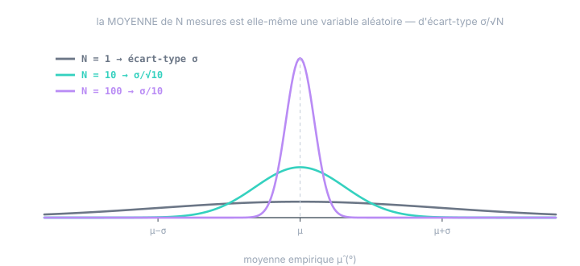

Chapitre 08
Estimer à partir de données : les estimateurs et leur précision
Objectifs du chapitre
- Comprendre qu'un estimateur est une VA — avec un biais et une variance.
- Établir le résultat central : la moyenne de N mesures a un écart-type σ/√N.
- Comprendre la correction de Bessel (le fameux N−1).
- Chiffrer la confiance : combien d'échantillons pour un R à ±10 % ?
1. L'estimateur : une recette, donc une variable aléatoire
Un estimateur est une recette de calcul appliquée aux données pour approcher un paramètre de la loi : « additionne les N mesures, divise par N » pour approcher μ. Appliquée à vos mesures, la recette donne un nombre — l'estimation, par exemple μ̂ = 5,03°.
Appliquez maintenant le test du chapitre 1 : « si je rejouais l'expérience, ce nombre changerait-il ? » Oui — d'autres bruits, d'autres mesures, une autre moyenne. Donc l'estimateur est une variable aléatoire, et votre 5,03° en est une réalisation. Dès lors, tout l'appareil des chapitres 2–4 s'applique à l'estimateur lui-même :
- son espérance : vise-t-elle la bonne cible ? L'écart E[μ̂] − μ s'appelle le biais de l'estimateur ;
- sa variance : à quel point le résultat fluctuerait-il d'un rejeu à l'autre ? C'est la précision de l'estimation.
Un bon estimateur est non biaisé (il vise juste en moyenne) et de faible variance (il vise groupé). Exactement les deux qualités d'un capteur — et ce n'est pas un hasard : un estimateur est un capteur logiciel.
2. Le résultat central : σ/√N
Prenons la moyenne empirique μ̂ = (1/N)Σzᵢ de N mesures indépendantes, chacune de loi (μ, σ²). Sa loi à elle :
Var[μ̂] = (1/N²)·Σ Var[zᵢ] = (1/N²)·N·σ² = σ²/N → écart-type σ/√N
Ligne 1 : linéarité de l'espérance (chapitre 2). Ligne 2 : additivité des variances pour des mesures indépendantes (chapitre 3), puis le facteur 1/N² du a². Le même duo qui a donné la marche aléatoire donne ici son théorème jumeau — dans l'autre sens : sommer étale en √N, moyenner resserre en √N.

Le √N suppose des mesures indépendantes — donc un bruit blanc à la cadence d'acquisition. Si le signal est corrélé (capteur filtré, chapitre 5 ; dérive, chapitre 6), les N points contiennent moins de N informations fraîches (N_eff < N) et le couloir se resserre plus lentement — voire plus du tout (moyenner une marche aléatoire ne converge vers rien). Toujours vérifier l'autocorrélation avant d'invoquer le √N.
3. Estimer la variance : le N−1 de Bessel
Pour la variance — notre R ! — la recette naturelle serait (1/N)Σ(zᵢ − μ̂)². Elle est biaisée : elle sous-estime systématiquement σ². La raison est belle : on mesure les écarts à μ̂ — qui a été calculée pour être au centre de ces mêmes données. La moyenne empirique colle aux données de trop près (elle a « absorbé » une part de leur dispersion), et les écarts résiduels sont trop petits, dans un rapport exact de (N−1)/N.
Diviser par N−1 — la correction de Bessel — répare exactement ce vol. Interprétation en « degrés de liberté » : les N écarts à μ̂ ne sont pas libres (ils somment à zéro par construction) ; il n'en reste que N−1 d'indépendants, et on divise par ce qu'on a vraiment. Si μ était connue (pas estimée), diviser par N serait correct.
4. Chiffrer la confiance : combien de mesures ?
Puisque s² est une VA, elle a sa loi — et sa loi donne les barres d'erreur de votre R. Pour un bruit gaussien, le résultat utile :
| N échantillons | précision de s² (±1 é.-t.) | précision de σ (moitié) |
|---|---|---|
| 50 | ± 20 % | ± 10 % |
| 200 | ± 10 % | ± 5 % |
| 2 000 | ± 3 % | ± 1,6 % |
| 20 000 | ± 1 % | ± 0,5 % |
D'où la consigne du chapitre 16 du cours Kalman — « quelques milliers d'échantillons » : à 2 000 points, votre R est connu à ±3 %, largement assez (le réglage fin se fait de toute façon par la NIS). Et la loi du χ² qui apparaît ici est la même qui borne la NIS : la boucle est bouclée — tester un filtre, c'est comparer une statistique calculée (réalisation) à la loi qu'elle devrait suivre (ensemble).
Écrire une estimation, c'est écrire deux nombres. Pas « R = 0,158 » mais « R = 0,158 ± 5 % (N = 200) ». La barre d'erreur dit ce que l'on peut exiger : inutile de discuter la 3ᵉ décimale d'un R estimé sur 50 points, et inutile aussi d'accumuler 10⁶ points quand ±3 % suffit. La statistique, c'est l'ingénierie du « combien de données pour quelle décision ».
5. La carte des estimateurs déjà rencontrés
Vous utilisez déjà, sans le mot, une petite famille d'estimateurs — les voici réunis :
| Estimateur | Cible | Propriété clé |
|---|---|---|
| moyenne empirique μ̂ | μ (biais capteur) | non biaisé ; précision σ/√N |
| variance s² (Bessel) | σ² = R | non biaisé ; précision √(2/(N−1)) ; suppose le bruit blanc |
| estimateur lag-1 Σ(zᵢ₊₁−zᵢ)²/2(N−1) | σ² (part blanche) | robuste à la dérive lente (il la différencie) |
| variance d'Allan | les σ² par couleur de bruit | sépare blanc / 1/f / marche aléatoire (chapitre 7) |
| le filtre de Kalman lui-même | l'état x, à chaque instant | l'estimateur récursif optimal — chapitre 9 |
La dernière ligne est le vrai punchline : le filtre de Kalman est un estimateur au sens exact de ce chapitre — une recette appliquée aux mesures, dont la sortie x̂ est une VA dont on contrôle le biais (nul) et la variance… qui s'appelle P.
Exercices
Exercice 1 — Dimensionner une campagne de mesure
Vous voulez le biais et le R de votre inclinomètre (σ ≈ 0,05° présumé), cadence 100 Hz. (a) Combien de temps d'enregistrement pour connaître le biais à ±0,001° (±1 é.-t.) ? (b) Et pour R à ±5 % ? (c) Laquelle des deux campagnes est la plus exigeante ?
Voir la solution
- (a) Il faut σ/√N ≤ 0,001 → √N ≥ 50 → N ≥ 2500, soit 25 s à 100 Hz.
- (b) √(2/(N−1)) ≤ 0,05·2 = 0,10 pour s² (±5 % sur σ ≈ ±10 % sur σ²) → N ≥ 201, soit ~2 s. Avec la convention stricte ±5 % sur s² : N ≥ 801, ~8 s.
- (c) Le biais : viser une précision absolue fine sur μ coûte cher en 1/√N. La variance converge vite en relatif. (Et en pratique le vrai facteur limitant du biais n'est même pas N : c'est la dérive lente — chapitres 5–7 — qui plafonne la précision atteignable, cf. le plancher d'Allan.)
Exercice 2 — Le N−1 vu par l'expérience de pensée
Cas extrême : N = 1. Que donne la formule en 1/N ? Et celle de Bessel ? Laquelle dit la vérité ?
Voir la solution
Avec un seul point, μ̂ = z₁ et l'écart à la moyenne est nul : la formule en 1/N rend s² = 0 — une certitude absolue affirmée à partir d'une mesure, manifestement absurde. Bessel rend 0/0 : indéfini — qui est la vérité : une seule mesure ne contient aucune information sur la dispersion (il faut au moins deux points pour voir un écart). Le N−1 n'est pas une coquetterie : il compte honnêtement l'information disponible.
Exercice 3 — Le filtre comme estimateur
Traduisez dans le vocabulaire de ce chapitre : (a) « le filtre est non biaisé » ; (b) « la NIS moyenne vaut 2,4 au lieu de 1 » ; (c) « P est la variance de l'estimateur ». Pour chacun, dites ce qui est réalisation et ce qui est ensemble.
Voir la solution
- (a) E[x − x̂] = 0 : sur l'ensemble des mondes possibles, l'erreur de l'estimateur-filtre est centrée. (Énoncé d'ensemble ; votre erreur de ce cycle, elle, est une réalisation non nulle.)
- (b) La statistique calculée (réalisation de la VA « NIS moyenne ») tombe loin de la valeur prévue par sa loi χ² (ensemble) : les hypothèses du modèle sont fausses — l'estimateur promet une variance S qu'il ne tient pas.
- (c) P = E[(x−x̂)(x−x̂)ᵀ] : exactement la « variance de l'estimateur » de ce chapitre, en version matricielle et récursive. La cohérence (NEES/NIS) vérifie que cette variance annoncée égale la variance réelle — un estimateur qui connaît et publie honnêtement sa propre barre d'erreur, voilà toute la promesse du filtre de Kalman.
Récapitulatif
- Un estimateur = une recette sur les données ⇒ une VA : biais (vise-t-il juste ?) et variance (vise-t-il groupé ?).
- Moyenne : non biaisée, écart-type σ/√N — moyenner resserre en √N (jumeau inverse de la marche aléatoire). Chaque décimale coûte ×100 mesures. Valide si mesures indépendantes (sinon N_eff < N).
- Variance : diviser par N−1 (Bessel) — la moyenne estimée a « absorbé » un degré de liberté. Précision relative √(2/(N−1)) : ~2000 points pour ±3 %.
- Une estimation s'écrit avec sa barre d'erreur ; le χ² de la variance est le même que celui de la NIS.
- Le filtre de Kalman est un estimateur : x̂ sa sortie, P sa variance, la cohérence la vérification qu'il dit vrai sur lui-même.